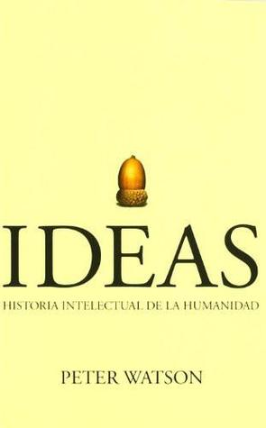

Ideas: historia intelectual de la humanidad
Reseña por Jorge I. Zuluaga

Ver reseña en GoodReads (necesita cuenta)
Digo todo esto solo para explicar que las 5 estrellas de GoodReads se quedan cortas para calificar algunos libros maravillosos.
"Ideas" de James Watson es ¡un libro de 10 estrellas!
No sé en qué estaba pensando su autor (periodista e historiador Inglés con otros libros no menos ambiciosos en su haber) al pretender un día escribir la "historia intelectual de la humanidad".
Otros en el pasado emprendieron proyectos similares.
la Enciclopedia de Diderot y compañía, el Espejo de Sima Guang (un libro de historia de China del período comprendido entre 400 a.e.c. y 1000 a.e.c. que tenía 354 capítulos) el diccionario Oxford de la lengua inglesa (sobre el que se hizo una hermosa película recientemente ¡veánla!)
En todos esos casos, sin embargo, era claro desde el principio que serían muchos los volúmenes que se escribirían antes de terminar la obra.
No fue este el caso de "Ideas" de Watson.
En un solo volumen de ~1200 páginas (más ~200 de notas y referencias bibliográficas) - al menos en la edición en español publicada por Crítica en 2005, que fue la que leí - logra compactar aproximadamente 60.000 años de historia intelectual de nuestra especie.
Es posible que muchos historiógrafos o expertos en disciplinas intelectuales específicas, encuentren en esta historia del pensamiento de 1.200 páginas omisiones imperdonables o períodos completos de la historia de las ideas de gran importancia y que han sido tratados tal vez superficialmente (yo - y no como experto - sentí por ejemplo que falto ampliar un poco las ideas de la Revolución Francesa.)
Para quiénes somos apenas unos legos en la materia ¡Ideas es un libro asombroso en su extensión y profundidad!
Conocí a Ideas en una librería hace un par de años. Me causo gran curiosidad, pero, debo confesarlo, me asustaron sus 1.400 páginas. No creía posible terminar un libro de esta extensión cuando, por mi indisciplina lectora de aquel tiempo, dejaba incompletos libros de menos de 200.
Esto cambio cuando por casualidad encontré a un profesor jubilado en un Centro Comercial, y a uno que quiero mucho y al que le debo buena parte de lo que soy como físico, Lorenzo de la Torre. Lorenzo nunca me había recomendado leer un libro en particular; ese día me recomendó leer a Watson. No recuerdo haber recibido antes un correo electrónico de Lorenzo. El primero que me envió, en los muchos años que nos conocemos, fue uno que incluía una copia electrónica de Ideas. ¡Gracias Lorenzo por ese regalo!
Ideas no es un libro para todo el mundo.
Si bien es un texto de divulgación histórica, es claro que a quienes les abrumen los detalles históricos, las fechas relevantes y los autores y libros decisivos relacionados con disciplinas intelectuales que les sean poco atractivas o ajenas a su experiencia (sociología, filosofía, química, medicina, ingeniería, psicología, música, astronomía, artes plásticas, antropología, física, arqueología, filología, matemáticas, poesía, alquimia, derecho, navegación, paleontología, historia de las religiones, teología, neurología, sicoanálisis, literatura, arquitectura, economía, exploración... ¿se me escapará una en la que no profundice en alguna parte Watson?) encontraran muchos apartes del libro difíciles de leer.
Sin embargo y si mi experiencia sirve de algo, soy físico y astrónomo, es decir, solo conozco una pequeña fracción de todas las disciplinas mencionadas antes ¡yo lo he disfrutado de pasta a pasta!
Si hay algo de la historiografía que sea maravilloso es que "ilumina con contexto" asuntos e ideas del presente y del pasado que parecen haber surgido de la nada o, al menos para mí como alguien no experto en historia, ideas que parecen haber aparecido de entre las neblinas de la historia sin un origen definido.
Ideas ilumina con una luz bastante uniforme (como solo se esperaría de una obra enciclopédica) casi cada esquina del pensamiento humano.
Leí con sumo cuidado los apartes dedicados al saber científico, en particular a los dedicados a la Astronomía y a la Física, de las que me preció saber. Sabía que de encontrar imprecisiones o afirmaciones equivocadas en estas áreas mi credibilidad de otras partes del libro se vería comprometida.
Para mi descanso (y espero para el de todos los que lo vayan a leer con el mismo cuidado), el libro es increíblemente preciso en la historia de las ideas de mi disciplina. Puedo exagerar, pero en mi me he permitido extender ese juicio (sin tener muchas pruebas) a todas las demás disciplinas cubiertas por Watson en este libraco.
Me tomo un mes leerlo. Lo hice especialmente en los fines de semana (dedicando un promedio de 8 horas en total durante sábado y domingo); en semana leía algo así como 1 hora diaria.
Cada minuto valió la pena. Los invito para que comiencen ahora mismo y les aviso de una vez que, contra todo pronóstico personal (como el que tenía yo cuando conocí el libro por primera vez) ¡terminaran de leer todo el libro!
Un detalle pequeño (pero para mi muy relevante). La tabla de contenido es genial. Además de enumerar el título de cada uno de los 36 capítulos, presenta también, por cada capítulo, una lista de las ideas mas importantes contenidas en él. Esto, a pesar de que esas mismas ideas no están separadas en el texto por títulos de sección. Con esto, la búsqueda de un tema particular, para futuras consultas, se hace un poco mas sencillo.
Mis capítulos preferidos (recuerden mi especialidad para juzgar mi elección):
- Los orígenes del lenguaje y la conquista del frío.
- Los orígenes de la ciencia, la filosofía y las humanidades.
- El derecho, el latín, la alfabetización y las artes liberales.
- Falsafah y Al-Jabr en Bagdad y Toledo.
- La difusión del saber y el ascenso de la exactitud.
- La amenaza atea y el surgimiento de la duda.
- La gran inversión de valores: el romanticismo.
- Los enemigos de la cruz y el corán: el fin del alma.
El capítulo final de conclusiones es ¡asombroso! El resumen general de las ideas y las tesis del mismo Watson sobre cuáles son las más importantes de la historia, además una especulación suya sobre el futuro de una de ellas (no les voy a arruinar la sorpresa) me dejo tan asombrado como el resto del libro.
Al día de hoy, solo lamento una cosa: no tener la memoria suficiente para recordar siquiera el 1% de lo que aprendí emocionado mientras leía el libro.
Tampoco estoy seguro que sea necesario hacerlo, pero la verdad es que me encantaría.
No me cabe la menor duda que conservare este libro como un gran tesoro y una fuente de consulta para mis propios libros.
Imitando a Watson en su ambición, aunque a una escala muchísimo menor, decidí desde el principio escribir un "hilo" en Twitter. Uno muy por cierto que termino teniendo 140 trinos (de los más largos que he visto en esa red). El hilo contiene principalmente datos que me impresionaron y quería compartir y conservar.
No debo dejar de confesar que escribí esos trino como un ejercicio mnemotécnico y recomiendo la técnica.
A quien encuentre útil (o al menos entretenido) leer y compartir cosas en esa red, aquí pueden encontrar mi hilo de "Ideas":
http://bit.ly/hilo-ideas